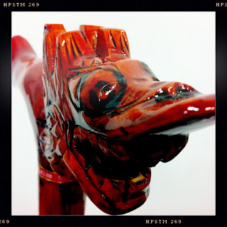

Recovered weblog entry
Akatsuki

Maybe you have a friend who has a friend that visited China. Perhaps then, that friend of a friend decided to bring back the world's greatest cane. Ultimately, your friend suggests this cane be on Hipstaproject. He then names the cane after an anime character from Vampire Knight. Smiles and happiness abound in great measure. Lens: Watts
Film: Pistil